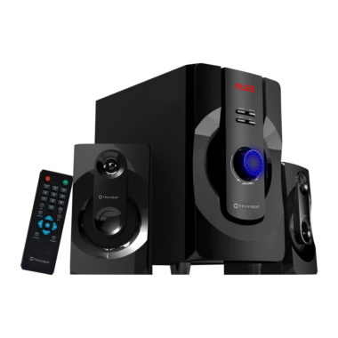

DESCRIPTION
The Intex IT-4000BT 30W 5.1 DVD Home Theater with Bluetooth support can make your floors shake with high powered beats delivered in excellent clarity that allows you to enjoy the real quality of bass, Jazz, classic or rock music. This home theatre is an excellent find to decorate the homes of any music lover!
Design and dimensions:
Intex has bestowed a compact and sleek look for this 5.1 home theatre that compliments the full black avatar it sports along with well finished trims. This newbie home theatre from Intex features a contemporary design and is coupled with cutting edge features that make it a stunning addition. It has a massive main unit with a dimension 6 inch that houses a small and sleek control panel studded with simple buttons and includes 5 satellite speakers of 3 inches each. This DTS ready home theatre system is magnetically shielded. The woofer made of fibre composite material enables the system to generate crystal clear audio and best quality surround sound without any distortions. A remote device is available to adjust volume, change tracks and regulate the bass levels or have control over the speakers.
Audio features:
Each 3.5-inch satellite speakers feature a 6 inch side-firing and the fiber composite woofer delivers excellent surround sound quality and offers crystal clear audio without any disturbances. With 8 ohm impedance, the Intex 5.1 IT-4000BT home theater is highly compatible with the latest Bluetooth version 2.0 EDR and more. The speaker arrives with 10mtrs range sensitivity that enables you to connect to Windows phones, DVD Blu Ray player, walkman, MP3 players, television sets, VCR and other music players that are Bluetooth-enabled.
Connectivity:
The IT-4000BT 30W Home Theater is designed to be highly compatible with any Bluetooth enabled device such as a notebook or mobile as it arrives with USB and SD support.
Intex IT4000BT 5.1 Home Theatre Specs
Functionality: DVD
Channels: 5.1
Watts per channel: 30 Watts
Number of Discs: 1
Tuner: FM
Warranty: 1 Year(s)
BUY NOW